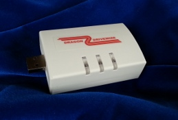
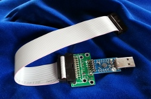
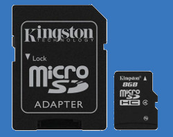

A new life for your Dragon
tormod.me is proud to present a range of accessories for the Dragon 32, Dragon 64, Dragon 200 and Tano Dragon home computers.
Many of the below products are related to DriveWire - see Introduction to DriveWire to learn more.
Hardware
|
MOOH memory expansion for Dragon / CoCo
The MOOH 512 KB memory expansion plugs into the cartridge port and gives your Dragon 32/64 and CoCo 1/2 a serious capacity boost to run FUZIX or NitrOS-9 Level 2. Also features ROM socket, SPI interface and SD card slot.
|
|

|
uDW
The uDW DriveWire microserver is a standalone, SD card based mass-storage solution for your Dragon. Put all your programs and files onto an SD card and access them on the Dragon as if it had a floppy drive or PC-based DriveWire server. Plugs into the printer port, no other cables or power supplies needed.
|
|  | DriveWire deluxe adapter
The DriveWire deluxe adapter connects your Dragon to any modern computer having a USB port. The connected computer can serve as a virtual floppy station, super-fast tape replacement, MIDI instrument or relay your Dragon to the Internet!
Available in white or black.
|
|  | Dragon DriveWire adapter
The DriveWire DriveWire adapter connects your Dragon to any modern computer having a USB port, like the deluxe adapter. This is a simpler version and comes without any case. The economical way to enter the world of DriveWire!
|
| +32KB memory expansion for Dragon 32
This 32KB memory expansion plugs into the cartridge port and gives your Dragon32 the extra memory you always wanted. Run NitrOS-9 like on a Dragon 64!
|
Ordering and shipping information
Extras (not sold separately)

|
DWLOAD EPROM
DWLOAD is the easiest way to get started with DriveWire. No DOS needed, this ROM modification recycles the old "DLOAD" command to turbo charge your Dragon 32 or 64. Load files from your uDW or other DriveWire server as easy and fast as it possibly can get. This EPROM replaces the BASIC PROM on the motherboard. 100% compatible with the original Dragon 32 BASIC ROM.
|
 |
EPROM adapter for Dragon 32
On the Dragon 32, a 28-pin to 24-pin adapter is needed to fit the DWLOAD EPROM to the motherboard socket. Can also be used for other 28-pin EPROMs. No adapter is needed on a Dragon 64. (Actual adapter model may differ from photo).
|
 |
Chip puller
(Limited stock) Helps to remove the original PROM from the socket when fitting the DWLOAD EPROM.
|
|  | SD card for MOOH
This is a standard 16 GB micro SDHC card from Kingston, prepared with example files and utilities to get you going. Includes micro-SD to SD card adapter.
|
 |
SDBOOT boot ROM for MOOH
The SDBOOT loads a program or operating system from the SD card on power-on.
|
Ordering and shipping information
More detailed information on these items will follow. Additional information, tips and discussions can be found in the Dragon forums on uDW, deluxe adapters, dw adapters, +32K, DWLOAD EPROMs
DriveWire software for Dragon
- DWLOAD - the easiest way to use DriveWire link
- DosPlus extended with DriveWire support link
- HDBDOS ported to Dragon 32 (can also run from RAM) link
- NitrOS-9 for your Dragon 32 (memory extension recommended) link
- FUZIX for Dragon or CoCo2 (work in progress, additional hardware needed) link
This software can be downloaded for free and is open-source. See the respective web sites for licensing and authorship. There are many contributors, in some cases I am the project maintainer, and/or have written the Dragon port.
DriveWire server software
For running a DriveWire server on an external computer. Not needed when using the uDW.
- DW4 - Drivewire server for Windows/Mac/Linux (by Aaron Wolfe)
- DW3 - original Drivewire server from Cloud9
Answers
See the FAQ and if that didn't help, contact me at